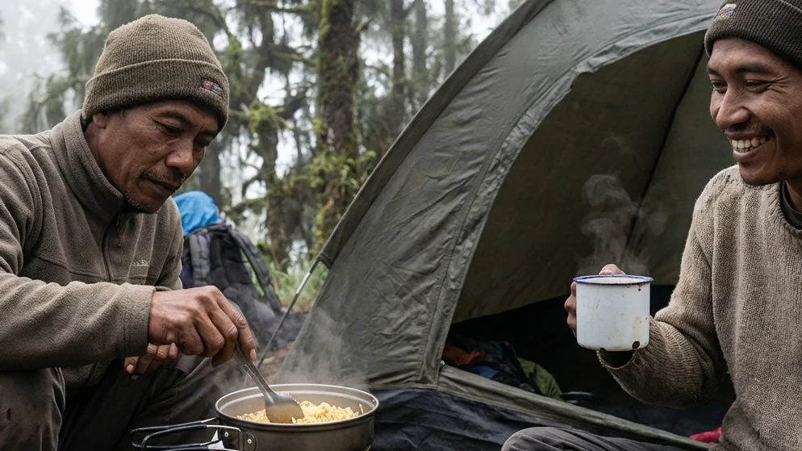

1. Pengantar: Melepas Penatnya Kota di Akhir Pekan
Tuntutan kehidupan di kota-kota besar seakan tidak pernah memberikan waktu jeda bagi warganya untuk sekadar menarik napas lega. Terjebak dalam hiruk pikuk kemacetan, tumpukan beban kerja (deadline), hingga minimnya interaksi dengan ruang terbuka hijau perlahan-lahan menggerus stabilitas kesehatan mental kita. Tak heran bila fenomena kelelahan ekstrem (burnout) kian mewabah. Dalam situasi ini, sekadar bersantai di pusat perbelanjaan atau *staycation* di dalam hotel berbintang seringkali terasa artifisial dan belum cukup untuk menyembuhkan keletihan batin secara paripurna.
Mengapa Harus Wisata Alam?
Manusia pada hakikatnya memiliki ikatan biologis purba dengan alam semesta. Menyempatkan diri untuk bersentuhan langsung dengan tanah yang basah, mendengarkan harmoni suara jangkrik, dan menatap birunya bentang langit terbukti secara ilmiah mampu menurunkan tingkat stres dengan sangat instan. Jika Anda tengah merencanakan sebuah pelarian (getaway) singkat yang benar-benar memulihkan jiwa, maka wacana mengenai Menikmati Alam Lewat Wisata Camping Batu Malang: Solusi Liburan Singkat dengan Sensasi Petualangan Nyata adalah jawaban paling taktis dan cerdas untuk akhir pekan Anda.
Batu Malang Sebagai Primadona Camping
Berbicara soal wisata alam di Jawa Timur, wilayah Malang Raya—khususnya Kota Batu—selalu menempati singgasana teratas. Dikelilingi oleh barisan gunung berapi yang megah seperti Arjuno, Welirang, dan Panderman, kontur tanah Batu menciptakan sebuah ekosistem dataran tinggi yang luar biasa subur dan menawan. Melalui panduan mendalam ini, kita akan membongkar seluruh keistimewaan mengapa camping menggunakan tenda otentik di Batu Malang adalah jalan pintas terbaik untuk merestorasi kewarasan, bagaimana cara mempersiapkannya tanpa merepotkan diri, hingga memilih lokasi kemah yang paling sempurna untuk Anda.
2. Sensasi Petualangan Nyata dengan Tenda Dome
Di saat tren pariwisata berlomba menawarkan fasilitas glamping yang mewah layaknya istana, tenda dome berbentuk setengah bola yang sederhana justru semakin dicintai oleh para petualang sejati.
Kembali pada Kesederhanaan yang Membahagiakan
Ketika Anda memilih untuk menginap di dalam tenda dome, Anda secara sadar sedang melucuti kemewahan peradaban modern. Anda akan belajar merundukkan tubuh saat masuk ke dalam tenda, tidur dengan punggung yang nyaris menyentuh permukaan bumi, dan mensyukuri seteguk air panas yang direbus dengan susah payah menggunakan kompor lapangan mini. Sensasi petualangan otentik ini memaksa Anda untuk lebih sadar akan momen (mindful) dan mengajarkan bahwa kebahagiaan tertinggi acapkali bersemayam di dalam kesederhanaan absolut.
Tenda Dome: Benteng Nyaman Menghadapi Suhu Pegunungan
Tenda dome mungkin terlihat tipis dan rapuh, namun secara fungsional ia dirancang bagaikan benteng pertahanan. Bentuknya yang melengkung dan aerodinamis diciptakan secara spesifik untuk membelah dan mengalirkan hantaman angin badai dari segala arah tanpa mematahkan tiang rangkanya. Wajib hukumnya bagi Anda untuk menggunakan tenda dome bertipe Double Layer (dua lapis kain). Lapisan jaring bagian dalam (inner) memastikan Anda tidak kehabisan oksigen, sementara lapisan payung luar (flysheet) berbahan Waterproof PU akan menangkis guyuran hujan deras dan mencegah uap embun (kondensasi) menetes membasahi tubuh Anda saat sedang terlelap pulas.
BACA JUGA (Edukasi Berkemah Otentik):
3. Daya Tarik Utama Wisata Camping di Batu Malang
Mengapa ribuan wisatawan bersedia menempuh perjalanan ratusan kilometer hanya untuk tidur beralaskan matras tipis di dalam tenda di wilayah Batu Malang?
Kualitas Udara yang Murni dan Menyehatkan Paru-Paru
Berada di ketinggian rata-rata di atas 1.000 meter di atas permukaan laut (MDPL), hawa di kawasan wisata Batu terasa amat sangat sejuk. Kualitas udaranya jauh dari jangkauan polusi jalanan. Hutan pinus yang tersebar luas bertindak bagaikan filter raksasa yang menyuplai oksigen murni secara konstan. Udara segar yang mengandung fitonsida (minyak atsiri alami dari daun pinus) ini secara klinis terbukti manjur untuk menurunkan produksi hormon kortisol penyebab stres di dalam tubuh.
Pemandangan Lautan Kabut dan Gemerlap City Light
Selain udara yang menyehatkan, mata Anda akan dibuai oleh teater alam yang menakjubkan. Saat Anda membuka pintu tenda di pagi buta, Anda akan sering disambut oleh fenomena lautan kabut tebal yang bergulung-gulung menyelimuti lembah. Ketika fajar menyingsing, kemunculan Golden Sunrise yang memecah kabut tersebut menjadi pemandangan yang teramat sakral. Sebaliknya, saat hari berganti malam, gelapnya alam liar di lereng bukit ini akan berpadu secara kontras dengan pijaran ribuan lampu kota (City Lights) Malang Raya yang berkedip syahdu di kejauhan.

Mempersiapkan sarapan hangat secara mandiri di depan tenda (camp cooking) menggunakan panci nesting memberikan kepuasan batin yang mendalam dan melatih insting kemandirian di alam liar. (Ilustrasi: Unsplash)4. Mempersiapkan Petualangan Singkat Anda
Satu kesalahan terbesar dari para pemula saat mengikuti Wisata Camping Batu Malang adalah meremehkan faktor keselamatan teknis, terutama dalam menghadapi ganasnya iklim mikro pegunungan.
Bawa Perlengkapan Pakaian yang Benar (Layering)
Suhu malam hari di lereng gunung Batu dapat merosot ekstrim mencapai angka 12 hingga 14 derajat Celcius. Jangan pernah menggunakan celana kain jeans (denim) tebal yang sangat rawan menyerap embun dan amat lambat mengering! Terapkan prinsip pakaian berlapis (3-Layering System). Lapis pertama (base layer) harus berbahan dry-fit untuk membuang keringat. Lapis kedua gunakanlah jaket berbahan polar atau fleece untuk mengunci rapat suhu panas badan. Dan untuk lapisan pelindung terluar (outer layer), kenakanlah jaket parasut tebal jenis windbreaker atau hardshell anti-air untuk menangkis terpaan angin yang tajam. Lindungi pula ekstremitas tubuh dengan kupluk (beanie) dan sarung tangan.
Bekal Makanan dan Perlengkapan Tidur (Sleep System)
Tidur telanjang punggung hanya beralaskan dasar tenda adalah bunuh diri. Gelarlah matras aluminium foil di lantai untuk memblokir hawa tanah, lalu tumpuklah dengan matras spons atau matras angin (sleeping pad). Masukkan sekujur tubuh Anda ke dalam kantong tidur (sleeping bag) tipe mummy yang tebal bulunya.
Untuk konsumsi, bawalah perlengkapan dapur mini seperti kompor gas portabel lipat (hi-cook) yang dilengkapi windshield (penghalang angin), serta panci aluminium bersusun serbaguna (nesting). Mengonsumsi seduhan minuman hangat berkalori (seperti teh jahe atau cokelat) di malam hari adalah kunci utama untuk menaikkan suhu inti tubuh dan menghindari risiko hipotermia.
5. Rekomendasi Lokasi Kemah: Batu Sunrise Camp
Jika Anda tidak memiliki waktu untuk berburu peralatan atau tidak memiliki nyali untuk masuk ke hutan belantara liar, terdapat sebuah solusi jalan tengah yang teramat brilian.
Lahan Berkemah yang Aman dan Terkelola
Destinasi perkemahan seperti Batu Sunrise Camp merupakan jawaban paripurna bagi warga urban. Mereka mengusung gagasan wisata alam berkonsep Comfort Camping. Alih-alih harus merepotkan diri menyewa tenda di kota dan memanggulnya ke atas gunung, pihak pengelola telah menyediakan paket sewa tenda All-In. Setibanya Anda di lokasi, sebuah tenda dome berkualitas penahan badai (double layer) telah dirakit dan berdiri dengan kokoh menanti Anda, lengkap berisi set matras tebal dan *sleeping bag* yang telah dilaundry higienis.
Ketersediaan Fasilitas Penunjang (Toilet dan Listrik)
Nuansa alam yang Anda nikmati tetap otentik karena tenda didirikan di bawah rimbunnya hutan pinus yang langsung menatap lembah sunrise. Namun, demi menjamin standar keamanan dan kenyamanan wisata keluarga, kawasan ini telah dialiri listrik secara merata ke tiap kavling tenda sehingga ponsel Anda selalu menyala. Fasilitas sanitasi buang airnya pun amat diperhatikan; terdapat blok kamar mandi permanen model toilet duduk yang terang, bersih, dan memadai.
BACA JUGA (Tips Logistik & Persiapan):
6. Etika Berada di Alam Terbuka
Kemewahan fasilitas penyewaan tenda tidak membebaskan Anda dari tanggung jawab moral untuk memelihara kelestarian bumi.
Jangan Meninggalkan Sampah (Leave No Trace)
Prinsip Leave No Trace wajib ditegakkan tanpa kompromi. Anda bertanggung jawab penuh atas segala sampah kemasan plastik camilan, tisu bekas, sisa makanan basah, hingga puntung rokok yang Anda hasilkan. Masukkan semuanya ke dalam kantong sampah pribadi (trash bag) dan bawa turun ke tempat pembuangan akhir. Selain itu, dilarang keras membuat api unggun dengan cara membakar rumput hidup secara serampangan. Gunakanlah alas bakar batu (fire-pit) komunal yang telah direstui oleh pengelola untuk mencegah bencana kebakaran lahan di musim kemarau.
7. Kesimpulan
Melarikan diri sejenak dari histeria kehidupan kota bukan sekadar hobi, melainkan investasi kritis bagi kewarasan jiwa Anda. Menjelajahi keindahan dalam tajuk bahasan Menikmati Alam Lewat Wisata Camping Batu Malang: Solusi Liburan Singkat dengan Sensasi Petualangan Nyata membuka tabir bahwa proses healing yang sesungguhnya tak memerlukan kemewahan bintang lima. Cukup bermodalkan tenda dome klasik yang menahan kerasnya suhu malam, diiringi kehangatan secangkir minuman yang diseduh dari panci nesting, Anda sudah mendapatkan sensasi petualangan otentik yang tak ternilai harganya. Ditambah lagi dengan kemudahan layanan Comfort Camping yang ditawarkan oleh lokasi seperti Batu Sunrise Camp, logistik perkemahan bukan lagi menjadi halangan. Kemasi pakaian tebal Anda, ajak keluarga atau kawan seperjuangan, dan biarkan syahdunya hembusan angin pegunungan Kota Batu memulihkan kembali jiwa raga Anda di akhir pekan nanti.